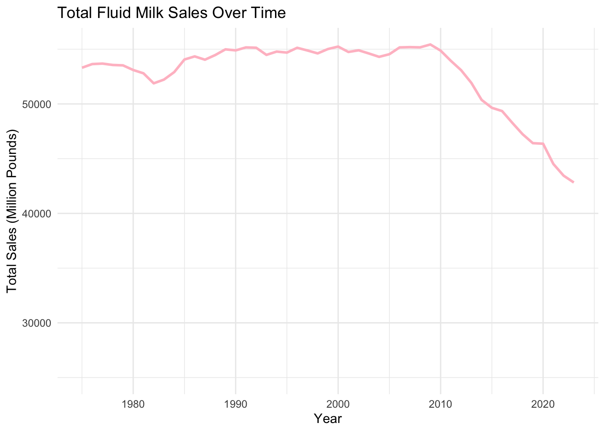
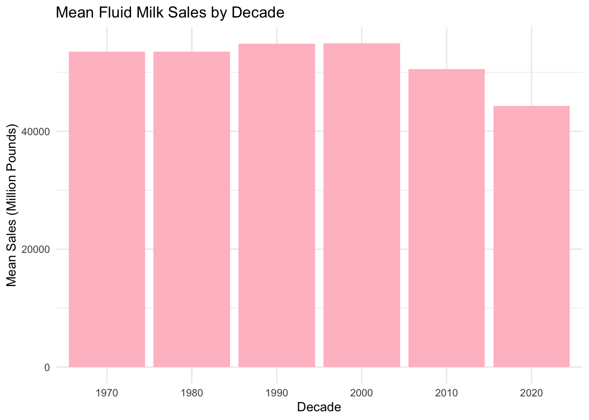

| Year | Whole_Milk | Reduced_Fat_2_% | Low_Fat_1_% | Skim | Flavored_Whole | Flavored_Other | Buttermilk | Eggnog | Total_Sales |
|---|---|---|---|---|---|---|---|---|---|
| 1975 | 36188 | 8726 | 2742 | 2480 | 1366 | 719 | 1011 | 76 | 53308 |
| 1976 | 35241 | 9556 | 2875 | 2524 | 1475 | 864 | 1021 | 87 | 53643 |
| 1977 | 34036 | 10423 | 3003 | 2617 | 1446 | 1062 | 1007 | 94 | 53688 |
| 1978 | 33235 | 11017 | 3233 | 2543 | 1359 | 1097 | 983 | 94 | 53561 |
| 1979 | 32480 | 11762 | 3281 | 2604 | 1236 | 1129 | 939 | 94 | 53525 |
| Year_mean | Year_sd | Year_min | Year_max | Whole_Milk_mean | Whole_Milk_sd | Whole_Milk_min | Whole_Milk_max | Reduced_Fat_2_%_mean | Reduced_Fat_2_%_sd | Reduced_Fat_2_%_min | Reduced_Fat_2_%_max | Low_Fat_1_%_mean | Low_Fat_1_%_sd | Low_Fat_1_%_min | Low_Fat_1_%_max | Skim_mean | Skim_sd | Skim_min | Skim_max | Flavored_Whole_mean | Flavored_Whole_sd | Flavored_Whole_min | Flavored_Whole_max | Flavored_Other_mean | Flavored_Other_sd | Flavored_Other_min | Flavored_Other_max | Buttermilk_mean | Buttermilk_sd | Buttermilk_min | Buttermilk_max | Eggnog_mean | Eggnog_sd | Eggnog_min | Eggnog_max | Total_Sales_mean | Total_Sales_sd | Total_Sales_min | Total_Sales_max |
|---|---|---|---|---|---|---|---|---|---|---|---|---|---|---|---|---|---|---|---|---|---|---|---|---|---|---|---|---|---|---|---|---|---|---|---|---|---|---|---|
| 1999 | 14.28869 | 1975 | 2023 | 20871.73 | 6577.846 | 13784 | 36188 | 16449.99 | 2830.542 | 8726 | 19851 | 5430.359 | 1518.188 | 2742 | 7755.5 | 5571.214 | 2512.099 | 2237.6 | 9203 | 807.7469 | 234.0883 | 519.2 | 1475 | 2538.131 | 1096.224 | 719 | 3980.8 | 701.3837 | 222.2274 | 420.5 | 1046 | 122.051 | 18.9262 | 76 | 153.4 | 52712.21 | 3324.906 | 42823.1 | 55432.9 |

a.Growth Period (1975 to mid-1980s): During this period, total fluid milk sales experienced steady growth, likely driven by population growth and increased demand for dairy products.
b.Plateau Phase (mid-1980s to around 2010): Sales remained relatively stable, indicating a period of sus- tained consumption where demand neither increased nor decreased significantly.
c.Decline Period (2010 to 2023): After 2010, a sharp and continuous decline in fluid milk sales is observed, reflecting a significant shift in consumer preferences and market trends.
the data suggests a major transformation in the dairy industry, particularly in the last decade, as consumer behaviors evolve. Understanding the underlying factors driving these trends would be key for stakeholders in the dairy market to adapt to these changes.

This histogram shows the mean fluid milk sales by decade. Sales remained relatively stable from the 1970s to the 2000s, hovering around similar levels. A noticeable decline begins in the 2010s and continues into the 2020s, reflecting shifting consumer preferences and reduced demand for fluid milk. This trend highlights a major change in the milk market over the past two decades.